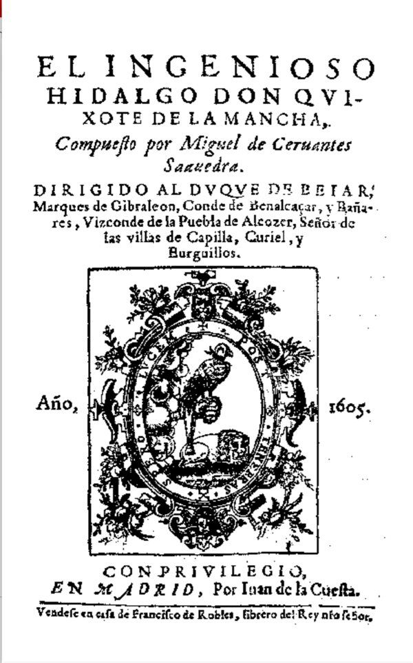

Don Quixote
Miguel de Cervantes
1605 · Juan de la Cuesta · 1,250 pages
4.5 of 5
FunnySlow pace
I read it in school because I had to. Now I reread it because I want to.
Contains spoilers: other readers see it hidden until they tap.
Your review · todayShare as image